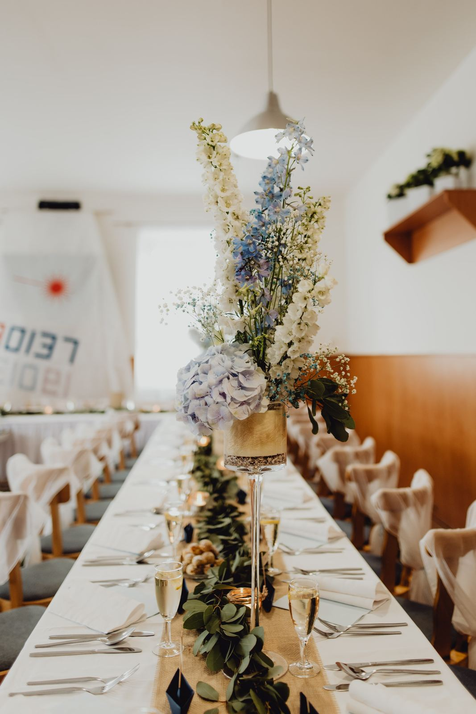
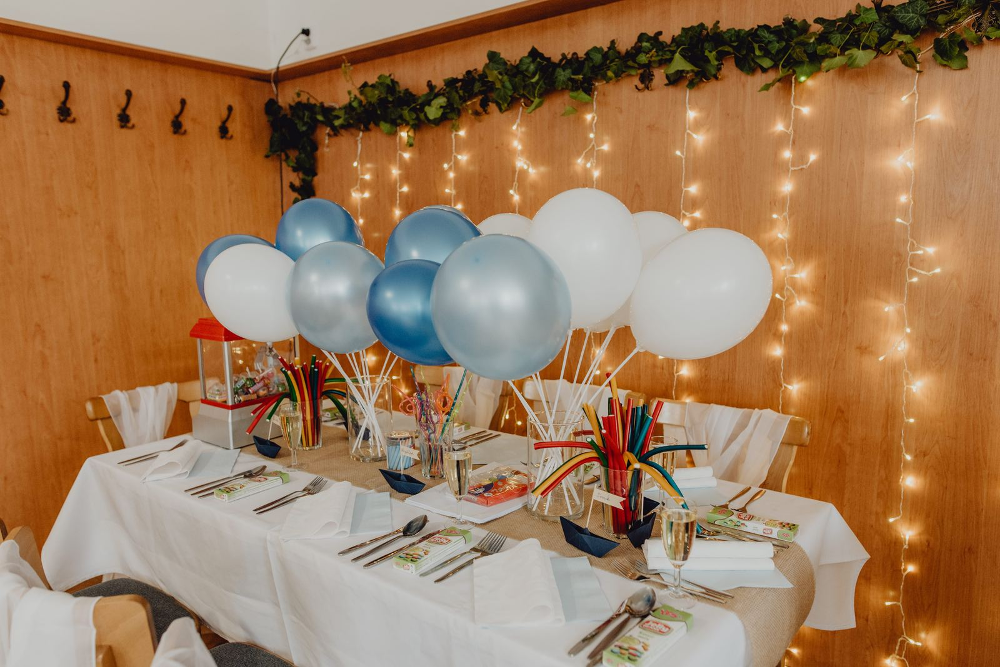

Zájezdy a oslavy
Zájezdy k nám jezdí pravidelně, proto víme, jak celý autobus pohostit rychle, v klidu a s péčí, kterou si zaslouží.
Jedete autobusem na zámek Lysice? Napište nám počet lidí a čas příjezdu. Menu domluvíme dopředu a stoly prostřeme, než dorazíte.

Co u nás pořádáme
Restaurace nabízí možnost pořádání nejrůznějších akcí, rautů, svateb, smutečních hostin, školních setkání, firemních večírků a jiných společenských událostí.
- Skupinové zájezdyOběd nebo večeře pro celý autobus, jídlo na stole pár minut po příjezdu.
- Firemní večírky a rautyVánoční a firemní večírky, porady s obědem, rauty a studené mísy.
- Oslavy a setkáníNarozeniny, výročí, křtiny i školní setkání.
- Smuteční hostinyKlidné posezení po rozloučení. Menu a počet hostů domluvíme s ohledem na situaci.
- SvatbyHostina, sladký bar a večerní raut. Výzdobu sálu domluvíme s vámi.
Na co se můžete spolehnout
- 110 místhlavní sál až pro 70 hostů a vedlejší sál pro 40
- 50 místletní zahrádka v sezoně
- 10 mmalé parkoviště hned vedle restaurace
- 30 mzastávka Lysice, pohostinství – autobus vysadí skupinu před vchodem
- 40 mvelké parkoviště, další je 110 m od nás
- 300 mzámek Lysice, asi 5 minut pěšky
- 4,1 ★654 hodnocení na Googlu, na Mapy.cz 4,3 ★ ze 121
„Zastavili jsme zde na oběd po cestě na dovolenou a bylo to dobré rozhodnutí. Obsluha velmi milá, atmosféra příjemná a jídlo rychle na stole…“
Host na Googlu
Napište nám, co chystáte
Ozveme se co nejdřív. Spěcháte? Zavolejte rovnou.
Naše nabídka pro skupinové zájezdy
- 1Moravský vrabec, zelí, houskový knedlík
- 2Kuřecí steak z grilu, šťouchaný brambor, zeleninová obloha
- 3Smažený vepřový řízek, bramborový salát
180 Kč za porci bez polévky200 Kč za porci s polévkou
Menu upravíme podle vás, i pro vegetariány a děti.
Jak to probíhá
- Pošlete poptávkuDatum, počet osob a přibližný čas příjezdu. Stačí formulář nebo telefon.
- Pošleme nabídkuDostanete návrh menu a cenu za osobu.
- Potvrdíte menuPočty upřesníte klidně den předem.
- Přijedete a jíteStoly jsou prostřené a polévka na stole.



Příjezd a parkování
Kolem restaurace je několik parkovišť, to největší hned vedle. Skupinu můžete vysadit na zastávce před vchodem.
Kde nejlépe zaparkuje autobus, poradíme na 775 206 577. Vzdálenosti jsou vzdušnou čarou podle OpenStreetMap.